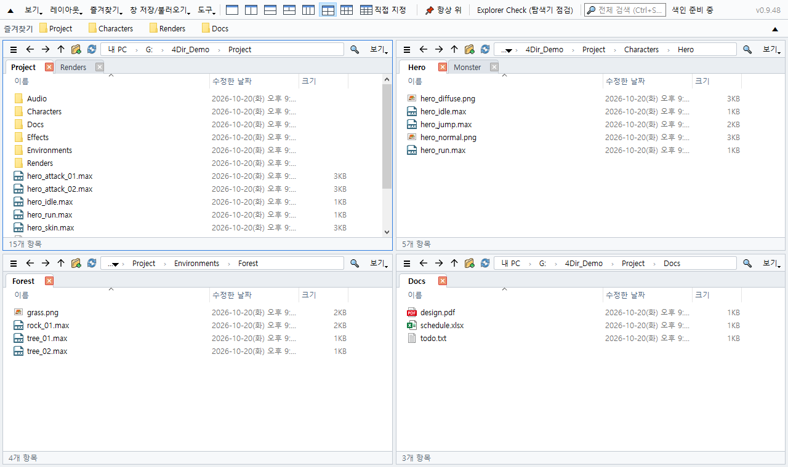
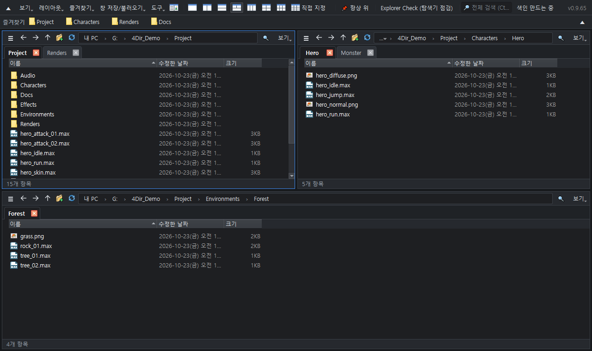

최대 20칸. 칸마다 탭. PC는 가볍게.
윈도우 10/11용 무료 파일 관리자. 설치 없이 압축만 풀고 실행.
윈도우 10/11 64비트 · 33 MB · 2026-10-22 · 무료

기능
최대 20칸
1·2·3·4·6칸을 버튼 하나로, 또는 가로 5 × 세로 4까지 원하는 대로. 칸마다 탭이 따로 있습니다.
PC를 무겁게 하지 않음
무거운 윈도우 탐색기 화면을 쓰지 않고 폴더를 직접 읽습니다. 쉬고 있을 때는 아무것도 하지 않아 3ds Max·게임 같은 무거운 프로그램 옆에 켜 둬도 안전합니다.
바로 찾는 검색
입력하는 즉시 드라이브의 모든 파일 이름을 찾습니다. 자체 목록이 실시간으로 갱신되고 관리자 권한이 필요 없습니다.
SVN 상태 한눈에
.svn 을 직접 읽어 수정·추가·충돌 표시. 안쪽이 바뀐 폴더는 빨갛게. Git·Perforce 는 윈도우 겹침 아이콘으로.
탐색기와 같은 손맛
같은 단축키, 윈도우 우클릭 메뉴 그대로, 탐색기·다른 프로그램과 끌어다 놓기.
휴대용·개인정보 보호
설정은 4Dir 폴더 안에만. 밝게/어둡게, 10개 언어, 이름 일괄 변경, 창 구성 복구, 탐색기 점검 기본 포함.

설치 방법
- 위 버튼(또는 깃허브 Releases)에서 zip 을 받습니다. 깃허브의 초록색 'Code → Download ZIP' 은 소스 코드만 있어 실행되지 않습니다.
- 압축 파일 우클릭 → 속성 → 차단 해제 체크 → 확인. (안 하면 실행할 때마다 보안 경고가 뜹니다)
- 아무 곳에나 압축을 풀고 4Dir.vbs 를 더블클릭.
윈도우 보안(SmartScreen) 창이 뜨면 추가 정보 → 실행. 4Dir 는 새 프로그램이라 아직 서명이 없습니다. 소스는 공개돼 있습니다.
정품 확인 (선택)
명령 프롬프트에서 certutil -hashfile 4Dir_v0.9.62.zip SHA256 결과가 아래와 같으면 정품입니다:
13e5c7a8830af4e487d122a30a2fcd2ef3ce6fd38885f441152c1ba12edef963
4Dir 후원하기
4Dir 는 무료이고 광고가 없습니다. 시간을 아껴 드렸다면 작은 후원이 다음 업데이트의 힘이 됩니다.
자주 묻는 질문
정말 무료인가요?
네. 무료 오픈소스(GPL-3.0)입니다. 광고·회원가입·체험 기간 없습니다.
정보를 보내나요?
개인 정보는 보내지 않습니다. 하루 한 번 새 버전이 있는지만 확인합니다(도구 메뉴에서 끌 수 있음).
문제가 생기면?
도구 → 문제 보고용 로그 저장 → 알림의 '메일로 보내기'를 누르거나, 생긴 zip 을 support@4dir.net 으로 보내 주세요. 깃허브 사용자는 문제 보고(Issue)도 됩니다.